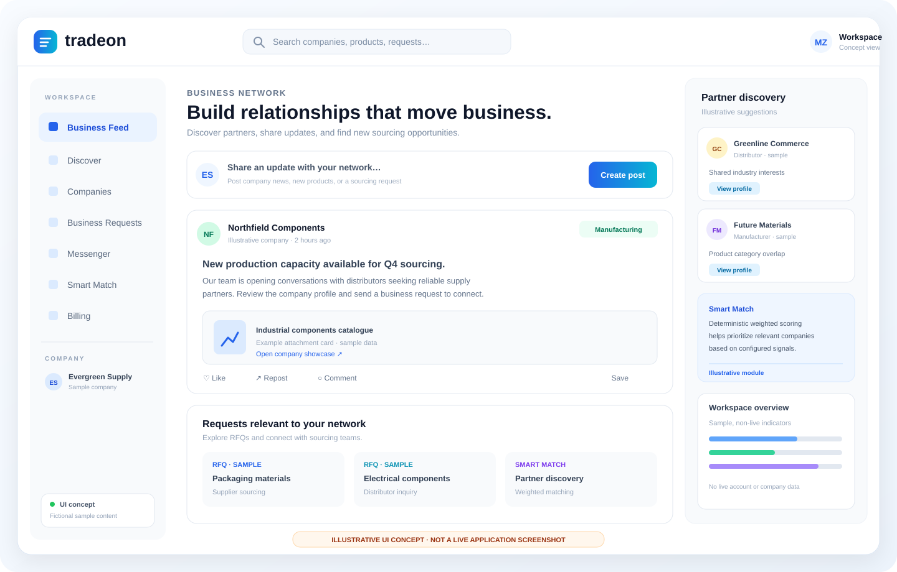
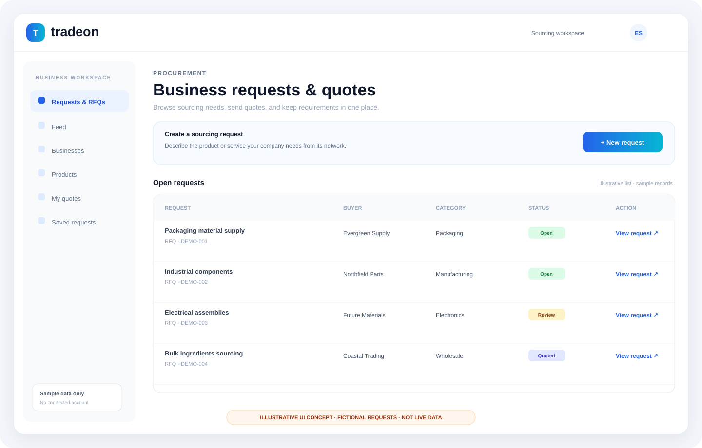
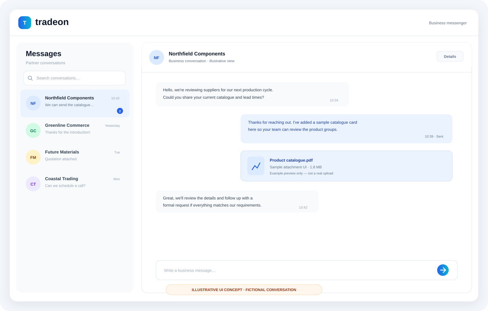
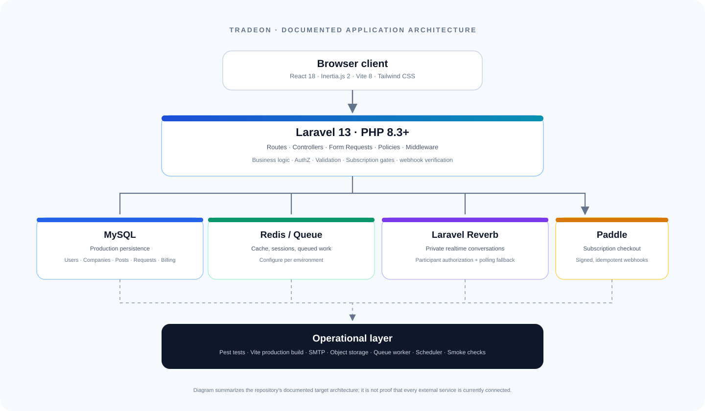

Discover companies
Global search across companies, manufacturers, products and requests, plus deterministic weighted Smart Match.
Tradeon is a full-stack B2B network concept for companies, manufacturers, suppliers, buyers and business professionals — bringing business updates, sourcing requests, company discovery, messaging and subscription billing into one product.

Product scope
The codebase documents server-side routes, domain controllers and authorization for the workflows below. This section describes repository scope, not an assertion that all external production services are currently running.
Global search across companies, manufacturers, products and requests, plus deterministic weighted Smart Match.
Publish business posts, then like, comment, repost, save or report through server-handled flows.
Business requests and quote flows with constraints such as active-only quoting and no self-quotes.
Company onboarding, verification workflow, product showcases, factory details and controlled document access.
Chat requests, participant-authorized private Reverb channels and a documented polling fallback.
Paddle subscription handling with server-verified webhook state, storage quota checks and admin moderation tools.
Visual product tour
The repository did not include real browser screenshots of an authenticated production app. These clean SVGs are illustrative UI concepts, with fictional records and visible labels, created to make the documented workflows easier to review.
A visual overview of the company feed, publishing entry point and partner-discovery concepts.

An illustrative procurement board for finding requirements, reviewing request state and opening a request to quote.

A conceptual conversation view aligned with the documented chat and private-channel functionality.

The application layers and the external services listed by the project's setup and handover docs.
Architecture
Vite builds the React entry, Inertia carries page requests and props, and Laravel owns validation, authorization, persistence and subscription decisions.
This is the documented target architecture, not proof that an external production deployment currently has all services provisioned. See the architecture notes for the code map and service responsibilities.
Evidence, not promises
Build and test claims are tied to the project's own records. The latest code audit did not re-run the full test suite or Vite build, so those historical outcomes are not presented as current verification.
The repository's final audit reports 137/137 PHP syntax files passing and 53 unique named routes. See the audit report ↗.
The handover records 114 tests / 340 assertions and a passing build, but a later audit states these commands were not re-run in its environment. Current results remain to be re-verified. Handover ↗
The Pages workflow completed successfully on 10 October 2026. That verifies the static introduction page only, not the Laravel application. View workflow run ↗
For the concise, dated checklist of evidence and next commands, open docs/VERIFICATION.md.
Developer setup
The application needs PHP/Composer and Node dependencies. The GitHub Pages introduction page is separate from this runtime.
From a clean Windows PowerShell terminal in the repository root, install the backend and frontend dependencies, create a local environment file and build the client assets.
Fill the required local environment values before testing mail, uploads, real-time messaging or Paddle. Use Paddle Sandbox credentials for subscription tests and never commit secrets.
Read full setup guide ↗composer install
Copy-Item .env.example .env
php artisan key:generate
php artisan migrate
php artisan db:seed
php artisan storage:link
npm install --legacy-peer-deps
npm run build
php artisan test
php artisan tradeon:smoke
composer run devProject links
Use the source repository for code; use the static Pages overview only as the project introduction.